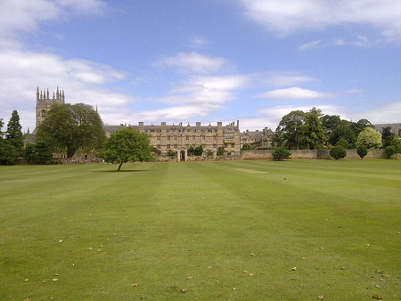
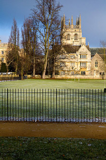
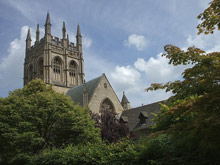
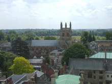

© 2021 Festival Art and Books. All rights reserved.
Tolkien's Places
Merton College Oxford - Part One
With acknowledgement to Wikipedia.
Merton College is one of the constituent colleges of the University of Oxford in England. Its foundation can be traced back to the 1260s when Walter de Merton, chancellor to Henry III and later to Edward I first drew up statutes for an independent academic community and established endowments to support it. The important feature of Walter's foundation was that this ‘college’ was to be self-governing and that the endowments were directly vested in the Warden and Fellows.
By 1274 when Walter retired from royal service and made his final revisions to the college statutes, the community was consolidated at its present site in the south east corner of the city of Oxford, and a rapid programme of building commenced. The hall and the chapel and the rest of the front quad were complete before the end of the 13th century, but apart from the chapel they have all been much altered since. To most visitors, the college and its buildings are synonymous, but the history of the college can be more deeply understood if one distinguishes the history of the academic community from that of the site and buildings that they have occupied for nearly 750 years. Merton is among the wealthier colleges, and as of 2006, had an estimated financial of £142 million.
The buildings
The "House of Scholars of Merton" originally had properties in Surrey (in present day Old Malden) as well as in Oxford, but it was not until the mid-1260s that Walter de Merton acquired the core of the present site in Oxford, along the south side of what was then St John's Street (now Merton Street). The college was consolidated on this site by 1274, when Walter made his final revisions to the college statutes.
The initial acquisition included the parish church of St John (which was superseded by the chapel) and three houses to the east of the church which now form the north range of Front Quad. Walter also obtained permission from the king to extend from these properties south to the old city wall to form an approximately square site. The college continued to acquire other properties as they became available on both sides of Merton Street. At one time the college owned all the land from the site of what is now Christ Church to the south eastern corner of the city. The land to the east eventually became the present day garden, while the western end was leased by Warden Rawlins in 1515 for the foundation of Corpus Christi (at an annual rent of just over £4).
The chapel
By the late 1280s the old church of St John the Baptist had fallen into "a ruinous condition",and the college accounts show that work on a new church began in about 1290. The present choir with its enormous east window was complete by 1294. The window is an important example (because it is so well dated) of how the strict geometrical conventions of the Early English Period of architecture were beginning to be relaxed at the end of the 13th century. The south transept was built in the 14th century, the north transept in the early years of the 15th. The great tower was complete by 1450. The chapel replaced the parish church of St. John and continued to serve as the parish church as well as the chapel until 1891. It is for this reason that it is generally referred to as Merton Church in older documents, and that there is a north door into the street as well as doors into the college. This dual role also probably explains the enormous scale of the chapel, which in its original design was to have a nave and two aisles extending to the west.[ A new choral foundation was established in 2007, providing for a choir of sixteen undergraduate and graduate choral scholars singing from October 2008. The choir is directed by Peter Phillips, currently also director of the Tallis Scholars and Benjamin Nicholas, director of music at Tewkesbury Abbey. A spire from the chapel has resided in Pavilion Garden VI of the University of Virginia since 1928, when "it was given to the University to honor Jefferson's educational ideals."
Front quad and the hall
The hall is the oldest surviving building in the college, but apart from the door with its magnificent medieval ironwork almost no trace of the ancient structure has survived the successive reconstruction phases, first by James Wyatt in the 1790s and then again by Gilbert Scott in 1874. The hall is still used daily for meals and houses a number of important portraits. It is not usually open to visitors.
Front quad itself is probably the earliest collegiate quadrangle, but its informal, almost haphazard, pattern cannot be said to have influenced designers elsewhere. A reminder of its original domestic nature can be seen in the north east corner where one of the flagstones is marked "Well". The quad is formed of what would have been the back gardens of the three original houses that Walter acquired in the 1260s.



Merton College from Christ Church Meadow

Merton College Chapel from just north of Christ Church Meadow

Merton College (including chapel) viewed from the north from St Mary’s Church.